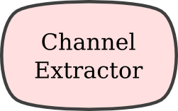
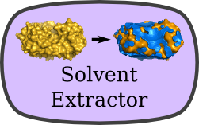
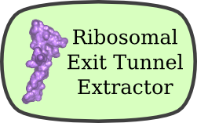

3vee molecular volume tools
Browser-based volume assessment and internal-volume extraction for PDB structures.
Calculations run locally with single-threaded WebAssembly. No coordinate upload server is used.
External volumes
Internal volumes
Channel Finder
Find and extract major channels based on their size.

Single Channel Extraction Extract a channel near a known x, y, z coordinate.
Solvent Extraction Extract all solvent-accessible internal volume from a structure.
Exit Tunnel Extraction Extract the polypeptide exit tunnel from a 50S ribosomal subunit.Volume Calculation
Voxel-based solvent-excluded volume and surface-area calculation for PDB coordinates.
Single-threaded WebAssembly; coordinate data and results remain in this browser.
Building the molecular volume...
Preparing the Volume calculation...
Volume results
Completed in entirely in this browser.
Drag to rotate. Scroll to zoom. Right-drag to pan.
Calculated series
Download results
Calculation stopped safely